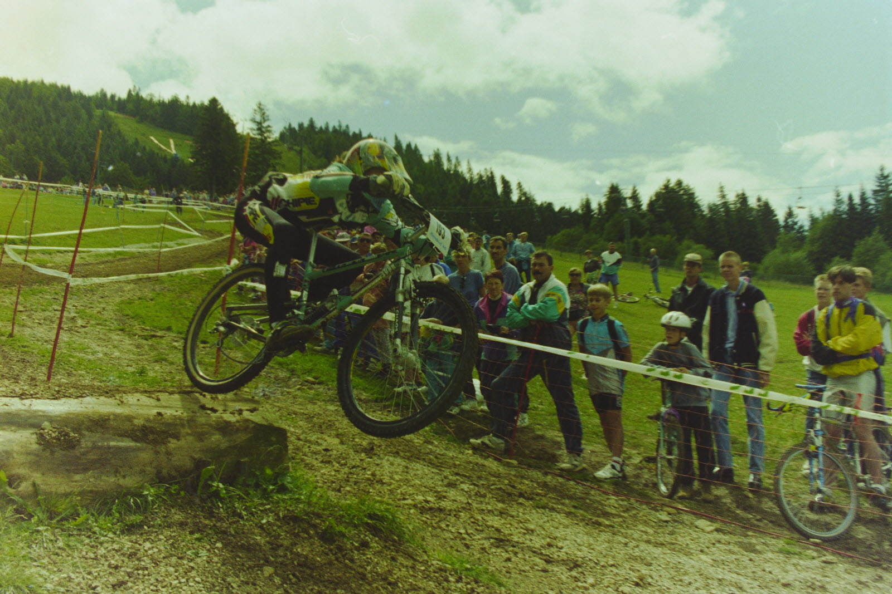

Les premiers
Breezer N°1

Le premier vrai VTT est créé! Son nom : “Breezer N°1”, en référence à Joe Breeze, cité avant. Il est conçu pour résister aux chocs à répétition. Il intègre également des composantes qu’on retrouve sur les VTT qui seront développées plus tard: jantes en acier 26 pouces de la marque Araya, moyeux Phil Wood, dérailleurs Sun Tour, freins Dia-Compe… Deux ans plus tard, en 1979, Tom Ritchey, créé la marque Fisher MoutainBikes avec Gary Fisher et Charlie Kelly. La fabrication de VTT en série est lancée!
Specialized Stumpjumper

Si le VTT attire quelques adeptes qui veulent s'essayer à cette nouvelle discipline, ils ne sont encore qu’une poignée jusqu’au début des années 1980. À cette époque, les premiers modèles apparaissent dans les salons de vélo et le VTT commence à se faire un nom. En 1981, le Specialized Stumpjumper est commercialisé. C’est un tournant dans l’histoire de la discipline puisque le modèle est une véritable référence et reste aujourd’hui l'un des modèles les plus célèbres de la marque Specialized.
Les courses
En France

En 1984, le premier VTT arrive en France. Cette même année, la première course de la discipline est organisée. Et c’est à nouveau à la France qu’on la doit puisqu’il s’agit du Roc d’Azur. Sept riders se réunissent alors pour participer à cette toute nouvelle course qui en compte aujourd’hui 20 000. D’autres compétitions sont ensuite organisées (Paris-Deauville, les 24 heures d’Auvergne, Chalmazel-Montbrison) et réunissent peu à peu de plus en plus de participants. En 1988, la discipline est reconnue par la fédération française de cyclisme.
Aux États-Unis
Deux ans plus tard, en 1990, les Championnats du monde de VTT sont organisés aux États-Unis. En 1991, la première édition de la Coupe du monde UCI est organisée avant que la discipline ne fasse son apparition aux Jeux olympiques d’Atlanta en 1996. On ne parle alors que de “cross-country” discipline originelle du VTT, avant que d’autres ne fassent leur apparition comme la descente, l’enduro, le slopestyle et on en passe...
Aujourd’hui

Aujourd'hui, les compétitions repoussent sans cesse les limites des pilotes. On pense à Red Bull Hardline, souvent considéré comme la course de DH la plus difficile ou encore à Red Bull Rampage qui réunit chaque année dans le sud de l'Utah au USA les pilotes les plus fous.
En France, le VTT (qu’il soit DH ou cross-country) produit des champions au palmarès inégalé et fait rayonner la discipline à travers le monde. Jamais d’ailleurs, elle n’a été aussi populaire et on espère évidemment qu’une chose : que ça perdurera.
Cascades élégantes dans un ballet de descente, le VTT devient une poésie en mouvement. Sur les sentiers escarpés, chaque descente est une chorégraphie raffinée, fusion de l'audace et de la grâce, où la montagne est la toile et le vététiste, l'artiste qui danse avec la pente, transcendant les limites de la terre et du courage.